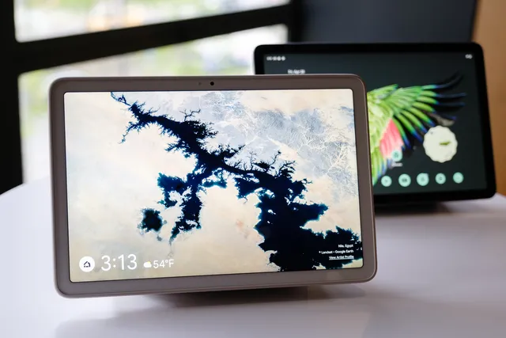
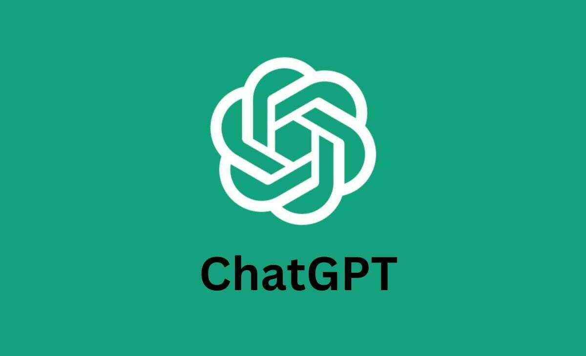
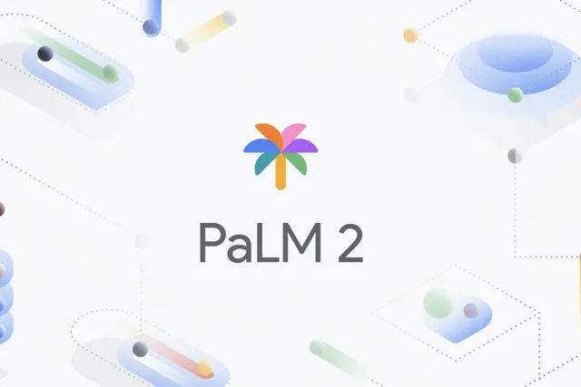
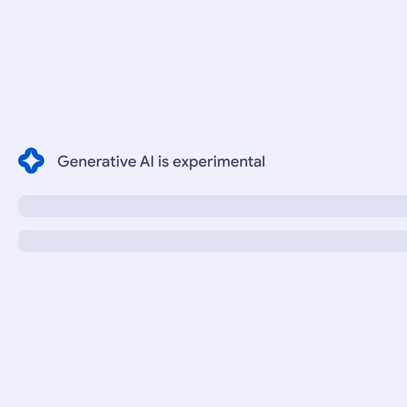
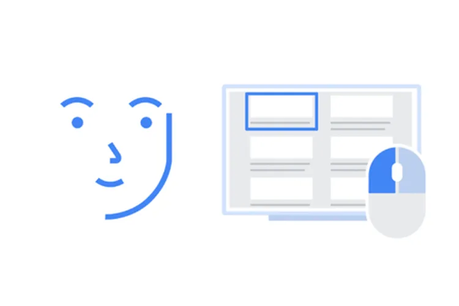
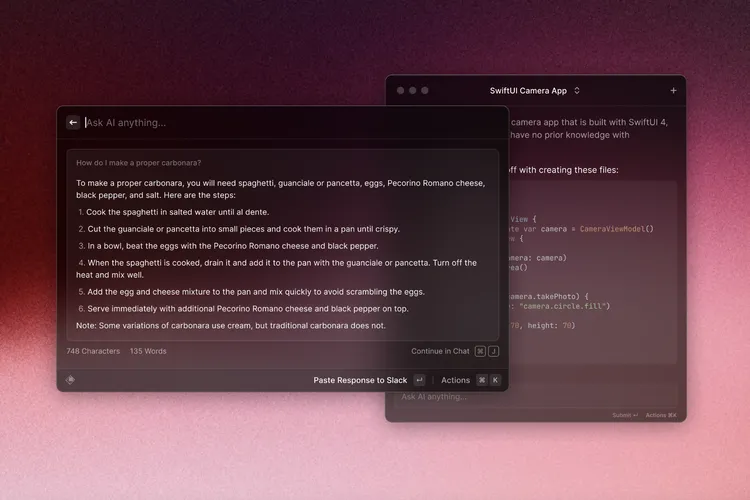
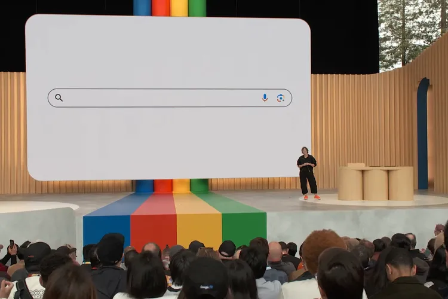

La tablet Pixel es la mitad de lo que podría haber sido
Como era de esperar, Google lanzó la tableta Pixel en su conferencia de desarrolladores Google I / O ayer. Es una tableta Android de 11 pulgadas con una "base de altavoz de carga", y cuando está en la base, se ve y funciona como un Nest Hub Max...
Leer más

Bing, Bard y ChatGPT: los chatbots de IA están reescribiendo Internet
Los grandes jugadores, incluido Microsoft, con su Bing AI (y Copilot), Google, con Bard, y OpenAI, con ChatGPT-4, están haciendo que la tecnología de chatbot de IA previamente restringida a los laboratorios de prueba sea más accesible para el público en general...
Leer más

Google anuncia el modelo de lenguaje de IA PaLM 2, que ya impulsa 25 servicios de Google
Google ha anunciado PaLM 2: su último modelo de lenguaje de IA y competidor de sistemas rivales como el GPT-4 de OpenAI.
"Los modelos PaLM 2 son más fuertes en lógica y razonamiento, gracias a una amplia capacitación en lógica y razonamiento", dijo el CEO de Google, Sundar Pichai, en el escenario de la conferencia I/O de la compañía...
Leer más

La adquisición de IA de la Búsqueda de Google comienza ahora
Google se está moviendo lenta y cuidadosamente para hacer que la IA suceda. Tal vez demasiado lento y con demasiado cuidado para algunas personas. Pero si opta por participar, le espera una experiencia de búsqueda completamente nueva.
Leer más

La herramienta de inteligencia artificial de código abierto de Google me permitió jugar mi juego favorito de Dreamcast con mi cara
Project Gameface está listo para instalarse como una aplicación de Windows que hace que los juegos sean más accesibles usando solo su cámara web....
Leer más

La nueva suscripción Pro de Raycast agrega IA y funciones de sincronización
Raycast, el lanzador con todas las funciones para Mac, ha anunciado una suscripción Pro de $ 8 por mes (facturada anualmente) que agrega nuevas funciones de IA y sincronización, junto con la opción de historial ilimitado del portapapeles, según lo informado por MacStories.
Leer más
Anthropic supera a OpenAI con un chatbot que puede leer una novela en menos de un minuto
Anthropic ha ampliado la ventana de contexto de su chatbot Claude a 75,000 palabras, una gran mejora con respecto a los modelos actuales. Anthropic dice que puede procesar una novela completa en menos de un minuto.
Leer más

Google I/O 2023: todas las novedades del gran evento de desarrolladores de Google
Google tenía mucho que demostrar al entrar en I/O 2023, y la compañía apareció con un montón de anuncios de IA para demostrar que sería un jugador serio en el campo....
Leer más